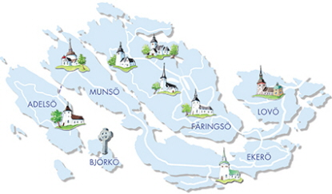

Här Bor Jag
Jag bor väster om Stockholm, i Ekerö kommun, på ön Färingsö

Mer specifikt så bor jag lång norrut på ön, i ett område som heter
Färentuna. Där finns en mataffär, en pizzeria, en trädgårdsaffär och en
grundskola med tillhörande dagis
Den närliggande skolan kan man gå i från åk 1 till åk 6, men för åk 7-9
behöver man välja en annan skola som är längre bort, det närmaste och
populäraste alternativet är Uppgårdskolan som ligger ca 20 minuter bort
, som ligger söder om i ett område som heter Stenhamra
Det närmaste shopping området ligger på Ekerö, och heter Ekerö centrum.
Där finns de flesta tjänsterna man kan behöva i vardagen, som en större
mataffär, en frisör, och andra mer specialiserade affärer. Om du behöver
någonting annat behöver du troligen åka in till city, och för detta kan
du antingen ta buss, färja eller bil.
Eftersom öarna ligger i mälaren så kan man bada bekvämt, detta är
populärt på sommaren, även andra vattenrelaterade hobbyer är populära
som exempelvis fiske eller båtåkning. På somrarna är det ofta fullt med
båtar vid Munsös kust, då det där ligger en inlandssjö som kan bli 5
grader varmare än den redan varma mälaren.
Mitt hem

Jag bor ihop med min mamma, Carina, och lillasyster, Emma, på Ölstavägen
112. Mitt sovrum ligger på övervåningen, och är relativt stort, medans
de andra sovrummen är mindre och på nedervåningen. På nedervåningen
ligger även vardagsrummet, köket, tvättstugan och det större badrummet.
På övervåningen ligger min mammas hemmakontor, ett förråd, en stor
garderob och ett mindre badrum.
Men eftersom vi bor “på landet” så har alla hus en tillhörande tomt, och
våran är full av växter, vilket främst är eftersom min mamma älskar att
arbeta i trädgård. Vår tomt är uppdelad i två nivåer, den övre är mindre
och där har vi en skuggträdgård och en altan.
Bild på skuggträdgården

På den nedre delen av tomten finns en sluttning som är dekorerad med
mängder av blommor och andra växter, det finns även ett grönsaksland med
allt från potatis till schalottenlök. Det finns även två äppelträd, som
ibland behöver klippas så att de inte faller isär pga överbelastning.
Allt detta ligger på den delen som är mot huset och den övre delen,
medans den bortre halvan är tom.
Bortom detta, på det närliggande fältet, brukar de ofta träna inför
hästtävlingar, så detta är någonting som man under sommarhalvåret ofta
kan titta på. Det finns även ett par hästhagar bortom detta utrymme, och
ett skjul där några brukar arbeta på gamla bilar.